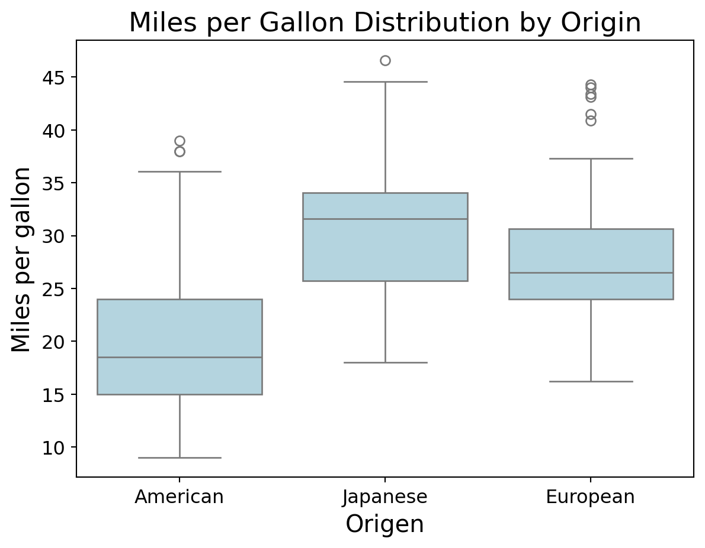
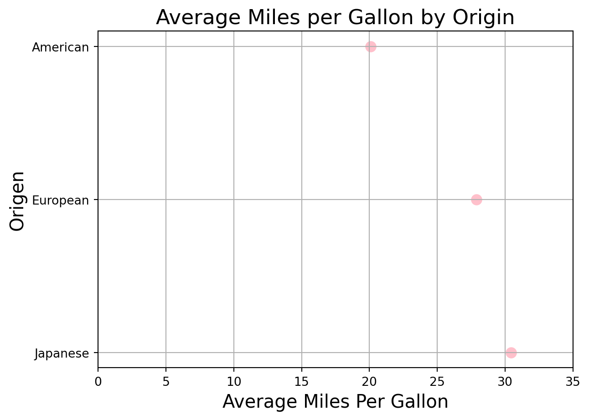
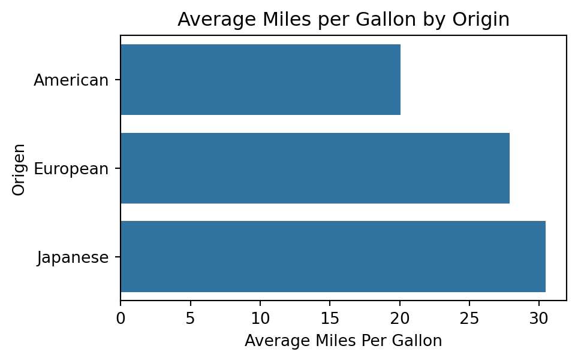

Let’s import the pandas, matplotlib, and seaborn in Google Colab before starting.
import pandas as pd import matplotlib.pyplot as plt import seaborn as sns
Multivariate data
Multivariate data consists of datasets that contain observations of two or more variables.
Variables can be numerical or categorical.
Variables may or may not depend on each other.
In fact, the goal is to determine whether there is a relationship between the variables and the type of relationship.
Example 1
Consider data from 392 cars, including miles per gallon, number of cylinders, horsepower, weight, acceleration, year, origin, among other variables.
The data is in the file “auto_dataset.xlsx”.
auto_data = pd.read_excel("auto_dataset.xlsx")
auto_data.head(4)
mpg
cylinders
displacement
horsepower
weight
acceleration
year
origin
car name
0
18.0
8
307.0
130
3504
12.0
70
American
chevrolet chevelle malibu
1
15.0
8
350.0
165
3693
11.5
70
American
buick skylark 320
2
18.0
8
318.0
150
3436
11.0
70
American
plymouth satellite
3
16.0
8
304.0
150
3433
12.0
70
American
amc rebel sst
Principle 1: Formulate the question
In the context of multiple-variable data, typical questions to study include:
How are variable \(X\) and variable \(Y\) related?
Is the distribution of variable \(X\) the same across all subgroups defined by variable \(Z\)?
Are there any unusual observations in the combination of values for variables \(X\) and \(Y\)?
Are there any unusual observations in \(X\) for a subgroup of variable \(Z\)?
Principle 2: Turn data into information
There are various types of graphs that help us explore relationships between two or more variables.
Type
Graph Type
Numerical
Scatter plot, line graph
Categorical
Side-by-side bar chart, stacked bar chart
Mixed
GSide-by-side box plot, bubble chart
Two Numerical Variables
Independent and dependent variables
When investigating the relationship between two variables (numerical or categorical), we use specific terminology.
One variable is called the dependent or response variable, denoted by the letter \(Y\).
The other variable is called the independent or predictor variable, denoted by the letter \(X\).
Our goal is to determine whether changes in variable \(X\) are associated with changes in variable \(Y\), and the nature of this association.
Scatter plot
The most common graph for examining the relationship between two numerical variables is the scatter plot.
Variables \(X\) and \(Y\) are placed on the horizontal and vertical axes, respectively. Each point on the graph represents a pair of \(X\) and \(Y\) values.
The goal is to explore linear or non-linear relationships between variables.
Scatter plot in Python
To create scatter plots in seaborn, we use the function scatterplot().
For example, let’s create a plot to explore the relationship between a car’s weight (weight) and its fuel efficiency in miles per gallon (mpg)
plt.figure(figsize=(8, 6))sns.scatterplot(data = auto_data, x ="weight", y ="mpg")plt.show()
To change the symbols used for points in a scatter plot, set the marker parameter to a number or character from the chart below.
Continuing with Principle 3, you can use previously seen functions to further improve the graph’s appearance.
Code
plt.figure(figsize=(7, 5))sns.scatterplot(data=auto_data, x="weight", y="mpg", color="darkblue", s=50)# Customize the plotplt.title("Weight and miles per gallon relationship in cars", fontsize=17)plt.xlabel("Weight (lb)", fontsize=15)plt.ylabel("Miles per gallon", fontsize=15)plt.yticks(fontsize=12)plt.xticks(fontsize=12)# Show the plotplt.show()
Include zero
In the previous graph, the minimum vertical axis value is around 10. To adjust the minimum value to 0, we use the additional function ylim() below.
Code
# Create the scatter plot with custom color and sizeplt.figure(figsize=(5.2, 3.2))sns.scatterplot(data=auto_data, x="weight", y="mpg", color="darkblue", s=50)# Set y-axis limitsplt.ylim(0, 50)# Customize the plotplt.title("Weight and miles per gallon relationship in cars", fontsize=17)plt.xlabel("Weight (lb)", fontsize=15)plt.ylabel("Miles per gallon", fontsize=15)plt.yticks(fontsize=12)plt.xticks(fontsize=12)# Show the plotplt.show()
If necessary, we can also adjust the horizontal axis to show 0 as well. To this end we use the xlim() function.
Code
# Create the scatter plot with custom color and sizeplt.figure(figsize=(7, 5))sns.scatterplot(data=auto_data, x="weight", y="mpg", color="darkblue", s=50)# Set y-axis limitsplt.ylim(0, 50)# Set x-axis limitsplt.xlim(0, 5500)# Customize the plotplt.title("Weight and miles per gallon relationship in cars", fontsize=17)plt.xlabel("Weight (lb)", fontsize=15)plt.ylabel("Miles per gallon", fontsize=15)plt.yticks(fontsize=12)plt.xticks(fontsize=12)# Show the plotplt.show()
Individual graphs
Individual variable graphs (such as histograms) do not allow us to study the relationship between two variables. They only provide information on the distribution of each variable.
Code
plt.figure(figsize=(4, 3))sns.histplot(data=auto_data, x="mpg", color="darkblue", edgecolor="black")plt.title("Distribution of miles per gallon", fontsize=17)plt.xlabel("Miles per gallon", fontsize=15)plt.ylabel("Frequency", fontsize=15)plt.yticks(fontsize=12)plt.xticks(fontsize=12)plt.show()
A line graph is a visual representation of data where data points are connected by a line. Axes:
\(X\) (horizontal): Represents time or the independent variable.
\(Y\) (vertical): Represents the dependent variable.
Each point represents a value at a given moment.
The objective is to explore trends over time or the evolution of a continuous variable.
Example 2
Consider the data in the file “spotify.xlsx”. This dataset contains the global daily streams of the top five most popular songs on the music streaming service Spotify in 2017.
spotify_data = pd.read_excel("spotify.xlsx")
spotify_data.head(4)
Date
Day
Shape of You
Despacito
Something Just Like This
HUMBLE.
Unforgettable
0
2017-01-06
1
12287078
NaN
NaN
NaN
NaN
1
2017-01-07
2
13190270
NaN
NaN
NaN
NaN
2
2017-01-08
3
13099919
NaN
NaN
NaN
NaN
3
2017-01-09
4
14506351
NaN
NaN
NaN
NaN
We will focus on the song Despacito by Luis Fonsi. To construct line plots, we use the functionlineplot() in seaborn.
We can change various aspects of the graph using additional arguments linetype, size, and color.
sns.lineplot(data = data_set, x = x, y = Y, linestyle, linewidth, color).
Code
# Create the line plotplt.figure(figsize=(10, 6))sns.lineplot(data=spotify_data, x="Date", y="Despacito", linestyle ='-', color="darkblue", linewidth=1.3)plt.title("Popularity of the song Despacito by Luis Fonsi", fontsize=16)plt.xlabel("Date", fontsize=12)plt.ylabel("Number of plays on Spotify", fontsize=15)plt.yticks(fontsize=12)plt.xticks(fontsize=12)plt.show()
Line types
To change the line type, set the linestyle parameter to a character shown below.
A Categorical and a Numerical Variable
Divide the Data into Groups!
To examine the relationship between a numerical and a categorical variable, we use the categorical variable to divide the data into groups. This way, we compare the distribution of the numerical variable among these groups.
In this context:
\(X\) is the categorical variable.
\(Y\) is the numerical variable.
The side-by-side boxplot is the most effective way to study the relationship between a categorical and a numerical variable.
Boxplot by Groups
The side-by-side boxplot compares the distribution of a variable across different groups.
In seaborn, the plot is obtained using the function:
sns.boxplot(data=data_set, x=X, y=Y).
For example, if we want to compare the distributions of miles per gallon of cars built in America, Europe, or Japan, we use the following command:
plt.figure(figsize=(7, 5))sns.boxplot(data=auto_data, x="origin", y="mpg", color="lightblue")plt.title("Miles per Gallon Distribution by Origin", fontsize=17)plt.xlabel("Origen", fontsize=15)plt.ylabel("Miles per gallon", fontsize=15)plt.yticks(fontsize=12)plt.xticks(fontsize=12)plt.show()

We can also change the format of outlier points using the arguments marker, markersize, and markerfacecolor inside the argument flierprops in sns.boxplot.
Code
plt.figure(figsize=(6, 4))sns.boxplot(data=auto_data, x="origin", y="mpg", color="lightblue", flierprops=dict(marker="o", markerfacecolor="purple", markersize=8))plt.title("Miles per Gallon Distribution by Origin", fontsize=17)plt.xlabel("Origen", fontsize=15)plt.ylabel("Miles per gallon", fontsize=15)plt.yticks(fontsize=12)plt.xticks(fontsize=12)plt.show()
Plotting statistical summaries by groups
Alternatively, we can summarize the values of the numerical variable \(Y\) for each category of the variable \(X\) using the median or the mean.
For example, let’s plot the average miles per gallon of cars produced in America, Europe, and Japan. First, we calculate the average for each category using groupby() and mean().
Two common visualization types for plotting a numerical and a discrete variable when there is only one value per category are:
Cleveland dot plot
Bar chart
Cleveland dot plot
The Cleveland dot plot encodes quantitative data across different categories. It is an alternative to a bar chart. It is obtained using the function scatterplot().
plt.figure(figsize=(8, 6))sns.scatterplot(data=sum_auto, x='meanMPG', y='origin')plt.title("Average Miles per Gallon by Origin", fontsize=17)plt.xlabel("Average Miles Per Gallon", fontsize=15)plt.ylabel("Origen", fontsize=15)plt.show()
Improving the plot
We apply Principle 3 to improve the plot.
Code
plt.figure(figsize=(7, 5))sns.scatterplot(data=sum_auto, x='meanMPG', y='origin', s=100, color='pink')plt.title("Average Miles per Gallon by Origin", fontsize=17)plt.xlabel("Average Miles Per Gallon", fontsize=15)plt.ylabel("Origen", fontsize=15)# Set x-axis limitsplt.xlim(0, 35)plt.show()

Bar Chart
To create a bar chart where the bar length equals a specific value, we use the function barplot() dfrom the seaborn.
plt.figure(figsize=(5, 3))sns.barplot(data=sum_auto, x='meanMPG', y='origin')plt.title("Average Miles per Gallon by Origin")plt.xlabel("Average Miles Per Gallon")plt.ylabel("Origen")plt.show()

We can use similar commands as the Cleveland dot plot to improve the bar chart.
Code
plt.figure(figsize=(7, 5))sns.barplot(data=sum_auto, x='meanMPG', y='origin', color='lightblue')plt.title("Average Miles per Gallon by Origin", fontsize=17)plt.xlabel("Average Miles Per Gallon", fontsize=15)plt.ylabel("Origen", fontsize=15)plt.xlim(0, 35)plt.show()
Two Categorical Variables
Divide the Data into Groups!
With two categorical variables, we compare the distribution of one variable across subgroups defined by the other variable.
In fact, we keep one variable constant and plot the distribution of the other.
To do this, the most popular charts are extensions of bar graphs:
Stacked bar charts
Side-by-side bar charts
Example 3
As an example, let’s consider the data in the file “penguins.xlsx”.
The side-by-side bar chart is generated using the .histplot() function, assigning the \(X\) variable to the hue argument and setting multiple='stack'.
For example, to study the distribution of penguin species across the three different islands, we use the following:
plt.figure(figsize=(8, 6))sns.histplot(data=penguins_data, x='species', hue='island', multiple='stack')plt.title("Distribution of Penguin Species by Island", fontsize=17)plt.xlabel("Species", fontsize=15)plt.ylabel("Count", fontsize=15)plt.show()
The chart shows the frequency of each species, separated by island name.
Side-by-side bar chart
An alternative to the previous chart is to place the bars side by side for the categories of the \(X\) variable.
In this case, we use the .countplot() function of seaborn.
plt.figure(figsize=(8, 6))sns.countplot(data=penguins_data, x='species', hue='island')plt.title("Distribution of Penguin Species by Island", fontsize=17)plt.xlabel("Species", fontsize=15)plt.ylabel("Count", fontsize=15)plt.show()
Stacked or Side-by-Side?
The main difference between stacked and side-by-side bar charts is that the side-by-side chart shows values in separate bars within a category.
Advantages of stacked bars:
Easier to understand what proportions of a whole are divided among segments.
Visually adds up each proportion.
Advantages of side-by-side bars:
Easier to compare the heights of each individual entity.
Better for comparing between groups.
Statistical Summaries
For categorical variables, the most common statistical summaries are frequency and relative frequency.
With pandas, we calculate frequency using the size(), function, which counts the unique values of one or more variables. We also use groupby() to compute the distribution by categorical variables.
The function produces a grid with 1 column and 3 rows of charts. Each row accommodates one category of origin.
<Figure size 768x576 with 0 Axes>
Multiple line charts
We can use the functions .lineplot() and FacetGrid() to visualize the evolution of play counts for the 5 songs in the file “spotify.xlsx” over time.
However, we need to manipulate the data to obtain the format required by these functions.
The required format
For a multiple line chart, we need to merge the columns Shape of You, Despacito, Something Just Like This, HUMBLE and Unforgettable into two columns.
One column will contain the number of plays, and the other will contain the song title.
Both columns will be ordered by the variable Date.
To format the data, we use the melt() function from the pandas library.
data_lines = spotify_data.melt(id_vars=["Date"], value_vars=["Shape of You", "Despacito", "Something Just Like This", "HUMBLE.", "Unforgettable"], var_name="Song", value_name="Plays")
data_lines.head()
Date
Song
Plays
0
2017-01-06
Shape of You
12287078.0
1
2017-01-07
Shape of You
13190270.0
2
2017-01-08
Shape of You
13099919.0
3
2017-01-09
Shape of You
14506351.0
4
2017-01-10
Shape of You
14275628.0
Now, we apply similar functions to the data_lines object.
Code
# Create the line plot and facet by 'Cancion'plt.figure(figsize=(8, 6))g = sns.FacetGrid(data_lines, col='Song')g.map(sns.lineplot, 'Date', 'Plays')# Customize the plotg.set_axis_labels("Date", "Plays")g.set_titles("{col_name} Song")# Rotate the x-axis labels for better readabilityfor ax in g.axes.flat: ax.set_xticklabels(ax.get_xticklabels(), rotation=90)# Show the plotplt.show()
<Figure size 768x576 with 0 Axes>
Or we can plot all lines on a single chart.
Code
# Create the line plot with color mapped to 'Cancion'plt.figure(figsize=(7, 5))sns.lineplot(x='Date', y='Plays', hue='Song', data=data_lines)# Customize the plotplt.title("Plays by Song Over Time")plt.xlabel("Date")plt.ylabel("Plays")plt.xticks(rotation=90) # Rotate x-axis labels for better readability# Show the plotplt.show()
Applying Principle 3
Code
# Create the line plot with color mapped to 'Cancion'plt.figure(figsize=(7.8, 5.8))sns.lineplot(x='Date', y='Plays', hue='Song', data=data_lines)# Customize the plotplt.title("Plays by Song Over Time", fontsize =17)plt.xlabel("Date", fontsize =12)plt.ylabel("Plays", fontsize =12)# Show the plotplt.show()
Graphs for four variables
A common chart for four variables is the scatter plot, where the color and size of the symbols depend on two categorical variables.
plt.figure(figsize=(8, 6))sns.scatterplot(data=penguins_data, x='bill_depth_mm', y='bill_length_mm', hue='species', size='island')plt.xlabel("Bill Depth (mm)")plt.ylabel("Bill Length (mm)")plt.title("Penguin Bill Dimensions by Species and Island")plt.show()